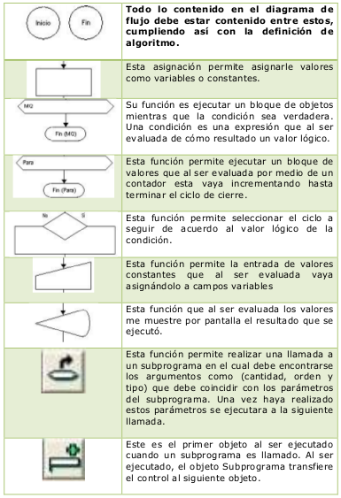
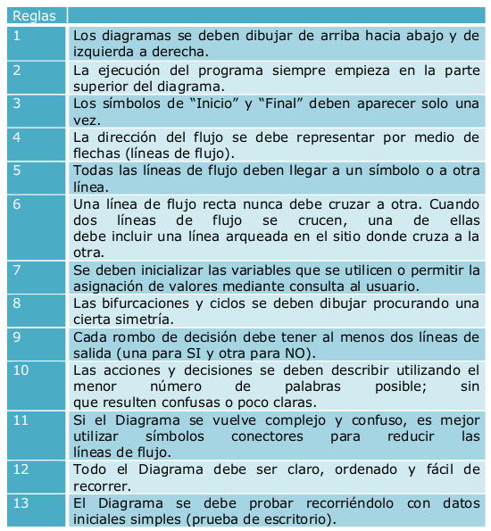

Temario
-
 Unidad 2-Comprendiendo los Algoritmos.
Unidad 2-Comprendiendo los Algoritmos. - 1. Diagrama de flujo.
- 3. Lenguaje de especificación de algoritmos: pseudocódigo.
- 4. Lenguaje español.
- 5. Fórmulas


Representación de los Algoritmos
Existen diversas formas de representación de algoritmos, pero no hay un consenso con relación a cuál de ellas es mejor.
Algunas formas de representación de algoritmos tratan los problemas a un nivel lógico, abstrayéndose de detalles de implementación, muchas veces relacionados con un lenguaje de programación específico. Por otro lado, existen formas de representación de algoritmos que poseen una mayor riqueza de detalles y muchas veces acaban por oscurecer la idea principal: el algoritmo, dificultando su entendimiento.
La representación de un algoritmo se logra mediante la independización de éste, del lenguaje de programación elegido. Con esto se logra que pueda ser representado en cualquier lenguaje. Para ello debe ser representado gráfica y numéricamente, así cualquier lenguaje de programación será capaz de interpretar su codificación.
Un algoritmo se representa tomando las siguientes consideraciones:
Diagramas de Flujo de Datos
Esta es una de las técnicas más antiguas y de mayor uso, pero hoy su utilización ha disminuido con la aparición de los lenguajes estructurados. Un diagrama de flujo hace uso de símbolos estándar que están unidos por flechas, que tienen una secuencia en que se deben ejecutar. En los diagramas de flujo del sistema se representan operaciones manuales y automáticas con diferentes dispositivos del sistema informático.
Simbologia

Importancia
Los diagramas de flujo son importantes pues nos facilitan la manera de representar visualmente el flujo de datos por medio de un sistema de tratamiento de información, en este realizamos un análisis de los procesos o procedimientos que requerimos para realizdiseñar un programa.
Por ejemplo: si queremos realizar una pizza, primero necesitamos los ingredientes, este ya sería un proceso, luego de haber conseguido los ingredientes necesitamos realizar la masa, este sería otro proceso, luego la salsa, este sería otro procesos y finalmente unimos todo y agregamos los complementos como el jamón, el queso, etc. Para la realización de esta pizza ya contamos con 4 procesos, los cuales podemos representar en un diagrama de flujo. Para así obtener un producto final, que sería la pizza.
Reglas de Construccion

Pseudocodigos
Conocido como lenguaje de especificación de algoritmos, el pseudocódigo se traduce posteriormente a un lenguaje de programación. La computadora no puede ejecutar el pseudocódigo. Su uso tiene ventajas porque permite al programador una mejor concentración de la lógica y estructuras de control, y no preocuparse de las reglas de un lenguaje de programación específico.
El pseudocódigo también ofrece la ventaja de poder hacer modificaciones cuando se detectan errores en la lógica del programa, lo que no es posible o es muy difícil cuando se ve esto en un lenguaje de programación.
Dentro de las ventajas del pseudocódigo es que da la facilidad de traducción por lenguajes como C, Java o PHP entre otros lenguajes estructurados. El pseudocódigo hace uso de palabras que son reservadas para las acciones sucesivas, las cuales son similares a sus homónimas en los lenguajes de programación tales como: star, end, stop, if-then-else, while-when, repeat-until, etc. El pseudocódigo exige la indentación (sangría en el margen izquierdo) de diferentes líneas.
Ejemplo:
Importancia
En la vida cotidiana, se emplean algoritmos frecuentemente para resolver problemas. Algunos ejemplos son los manuales de usuario, que muestran algoritmos para usar un aparato, o las instrucciones que recibe un trabajador por parte de su patrón. Algunos ejemplos en matemática son el algoritmo de la división para calcular el cociente de dos números, el algoritmo de Euclides para obtener el máximo común divisor de dos enteros positivos, o el método de Gauss para resolver un sistema lineal de ecuaciones.